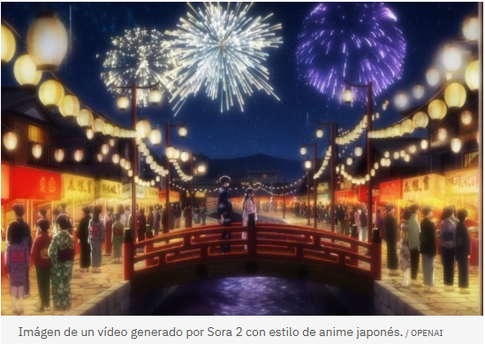
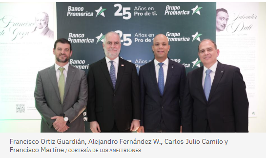
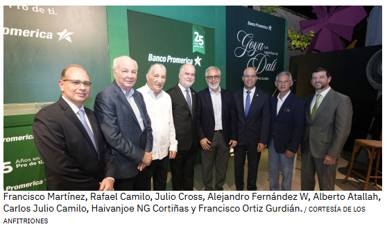
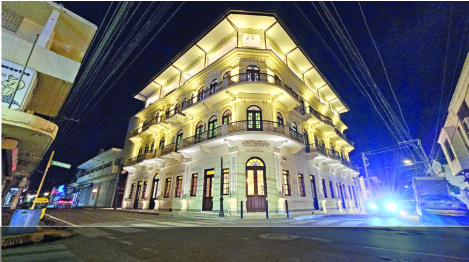

Sección de Cultura
Japón acusa a OpenAI de generar contenido similar a animes con Sora 2
En este sentido la JBA, que representa a un total de 207 empresas de radiodifusión en Japón, ha denunciado que, desde su lanzamiento, Sora 2 ha permitido generar vídeos con contenido "idéntico" al creado por algunas de estas compañías, que está protegido por derechos de autor, y que se ha difundido por Internet

La Asociación Japonesa de Radiodifusores Comerciales (JBA) ha acusado a OpenAI y su modelo Sora 2 de
infringir los derechos de autor de algunas compañías productoras de anime y otro tipo de contenido
japonesas, al utilizar su material para entrenar sus modelos sin permiso, tras la difusión de vídeos
con contenido "idéntico o muy similar".
OpenAI presentó su nueva versión del modelo de IA generativa para creación de vídeos Sora 2 a finales de
septiembre, una versión capaz de generar paisajes sonoros de gran realismo y de sincronizar los diálogos
y los efectos de sonido, entre otras mejoras.
En este sentido la JBA, que representa a un total de 207 empresas de radiodifusión en Japón, ha denunciado
que, desde su lanzamiento, Sora 2 ha permitido generar vídeos con contenido "idéntico" al creado por algunas
de estas compañías, que está protegido por derechos de autor, y que se ha difundido por Internet.
Banco Promerica celebra 25 años con exposición
En una velada que combinó arte, historia y reflexión, Banco Promerica República Dominicana celebró
su 25 aniversario con la exposición “Los Caprichos de Goya” y “Los Caprichos de Goya intervenidos por Dalí”,
de la Colección Ortiz Gurdián, en el Centro Cultural Amaya.
La muestra reúne dos visiones maestras que dialogan a través del tiempo sobre la condición humana, la crítica
social y la imaginación, reafirmando el compromiso de Banco Promerica en pro del arte y la cultura.

Centro Cultural Banreservas queda inaugurado, abre este lunes al público
El edificio fue adquirido por disposición del presidente Luis Abinader y transformado por Banreservas mediante una inversión superior a los 340 millones de pesos, en un proceso de ingeniería que fue resaltado por Leonardo Aguilera.

Nostalgia por lo que fue. Celebración y expectativas sobre lo que a partir de hoy será. El emblemático hotel Mercedes de Santiago desempolvó el pasado sábado los recuerdos de testigos, incluyendo al presidente Luis Abinader, que se hospedaron, asistieron a eventos o lo apreciaron al pasar por ahí desde su inauguración en 1929 (cerró en 2002). Esa página de este símbolo de esta ciudad cibaeña queda en la memoria colectiva, imborrable, pero se abre una nueva, fascinante.